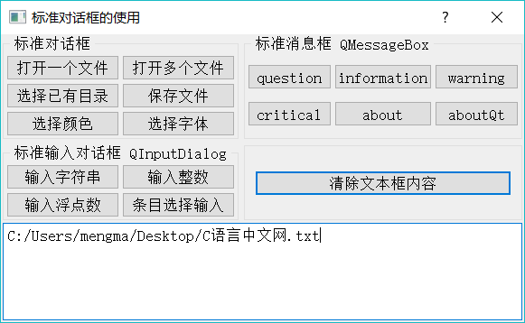
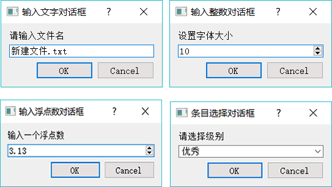
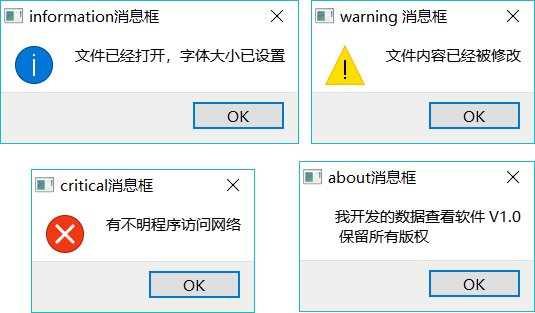
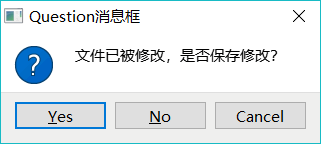
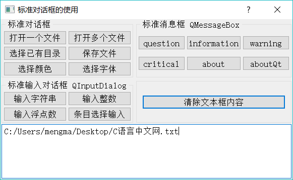
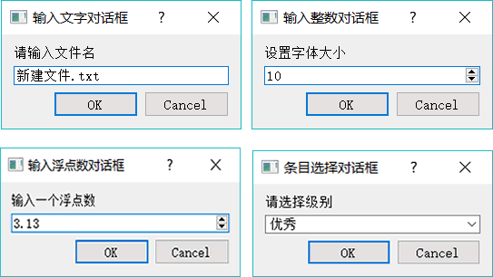
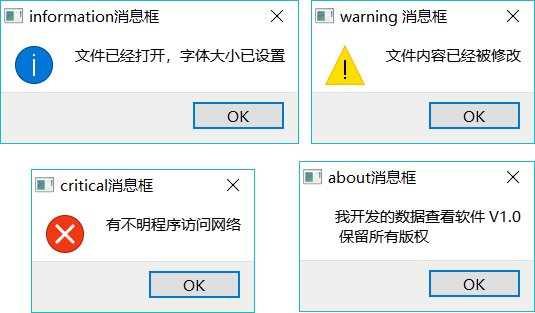
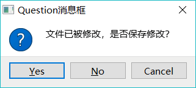

首页 > 编程笔记
Qt 5种标准对话框及使用方法详解
Qt 为应用程序设计提供了一些常用的标准对话框，如打开文件对话框、选择颜色对话框、信息提示和确认选择对话框、标准输入对话框等，用户无需再自己设计这些常用的对话框，这样可以减少程序设计工作量。
在前面几章的实例中，或多或少地用到了其中的一些对话框。Qt 预定义的各标准对话框的类，及其主要静态函数的功能见表 1（由于输入参数一般较多，省略了函数的输入参数，只列出了函数的返回值类型）。
实例 samp6_1 演示使用这些对话框，程序运行界面如图 2 所示。下方的文本框显示打开文件的文件名或一些提示信息，某些对话框的输入结果可应用于文本框的属性设置，如字体和颜色。

图 2 实例 samp6_1 运行界面
QFileDialog::getOpenFileName() 函数返回的是选择文件的带路径的完整文件名，如果在对话框里取消选择，则返回字符串为空。
静态函数 QCoreApplication::applicationDirPath() 返回应用程序可执行文件所在的目录，getExistingDirectory() 函数的返回值是选择的目录名称字符串。
如下面的代码，即使选择覆盖文件，由于代码里没有实质地覆盖原来的文件，也不会对选择的文件造成任何影响：

图 3 QinputDialog 4种输入对话框
其中编辑框响应模式是枚举类型 QLineEdit::EchoMode，它控制编辑框上文字的显示方式，正常情况下选择 QLineEdit::Normal；如果是输入密码，选择 QLineEdit::Password。代码如下：
例如，warning() 的函数原型是：
warning() 函数的返回结果是 StandardButton 类型。对话框上显示的按钮和缺省选中按钮也是 StandardButton 类型。
StandardButton 是各种按钮的定义，如 OK、Yes、No、Cancel 等，其枚举取值是 QMessageBox::Ok、QMessageBox::Cancel、QMessageBox::Close 等。

图 4 QMessageBox 的几种消息提示对话框
例如，下面是程序中调用 QMessageBox 信息显示的代码（显示的几个对话框如图 4 所示）：

图 5 QMessageBox:: question() 生成的对话框
静态函数 QMessageBox::question() 的原型如下：
下面是产生如图 5 所示对话框的代码，并根据对话框选择结果进行了判断和显示：
在前面几章的实例中，或多或少地用到了其中的一些对话框。Qt 预定义的各标准对话框的类，及其主要静态函数的功能见表 1（由于输入参数一般较多，省略了函数的输入参数，只列出了函数的返回值类型）。
| 对话框 | 常用静态函数名称 | 函数功能 |
|---|---|---|
|
QFileDialog 文件对话框 |
QString getOpenFileName() QStringList getOpenFileNames() QString getSaveFileName() QString getExistingDirectory() QUrl getOpenFileUrl() |
选择打开一个文件 选择打开多个文件 选择保存一个文件 选择一个己有的目录 选择打幵一个文件，可选择远程网络文件 |
|
QcolorDialog 颜色对话框 |
QColor getColor() | 选择颜色 |
|
QFontDialog 字体对话框 |
QFont getFont() | 选择字体 |
|
QinputDialog 输入对话框 |
QString getText() int getlnt() double getDouble() QString getltem() QString getMultiLineText() |
输入单行文字 输入整数 输入浮点数 从一个下拉列表框中选择输入 输入多行字符串 |
|
QMessageBox 消息框 |
StandardButton information() StandardButton question() StandardButton waming() StandardButton critical() void about() void aboutQt() | 信息提示对话框 询问并获取是否确认的对话框 警告信息提示对话框 错误信息提示对话框 设置自定义信息的关于对话框 关于Qt的对话框 |
实例 samp6_1 演示使用这些对话框，程序运行界面如图 2 所示。下方的文本框显示打开文件的文件名或一些提示信息，某些对话框的输入结果可应用于文本框的属性设置，如字体和颜色。

图 2 实例 samp6_1 运行界面
QFileDialog 对话框
选择打开一个文件
若要打开一个文件，可调用静态函数 QFileDialog::getOpenFileName()，“打开一个文件”按钮的响应代码如下：
void Dialog::on_btnOpen_clicked()
{ //选择单个文件
QString curPath=QDir::currentPath();//获取系统当前目录
//获取应用程序的路径
QString dlgTitle="选择一个文件"; //对话框标题
QString filter="文本文件(*.txt);;图片文件(*.jpg *.gif *.png);;所有文件(*.*)"; //文件过滤器
QString aFileName=QFileDialog::getOpenFileName(this,dlgTitle,curPath,filter);
if (!aFileName.isEmpty())
ui->plainTextEdit->appendPlainText(aFileName);
}
QFileDialog::getOpenFileName() 函数需要传递 3 个字符串型参数，分别如下：
- 对话框标题，这里设置为"选择一个文件"。
- 初始化目录，打开对话框时的初始目录，这里用QDinxurrentPath()获取应用程序当前目录。
- 文件过滤器，设置选择不同后缀的文件，可以设置多组文件，如：
QString f ilter="文本文件.txt);;图片文件（* .jpg *.gif *.png);;所有文件（*.*)";
每组文件之间用两个分号隔开，同一组内不同后缀之间用空格隔开。QFileDialog::getOpenFileName() 函数返回的是选择文件的带路径的完整文件名，如果在对话框里取消选择，则返回字符串为空。
选择打开多个文件
若要选择打开多个文件，可使用静态函数 QFileDialog::getOpenFileNames()，“打开多个文件”按钮的响应代码如下：
void Dialog::on_btnOpenMulti_clicked()
{ //选择多个文件
//获取应用程序的路径
QString curPath=QDir::currentPath();//获取系统当前目录
QString dlgTitle="选择多个文件"; //对话框标题
QString filter="文本文件(*.txt);;图片文件(*.jpg *.gif *.png);;所有文件(*.*)"; //文件过滤器
QStringList fileList=QFileDialog::getOpenFileNames(this,dlgTitle,curPath,filter);
for (int i=0; i<fileList.count();i++)
ui->plainTextEdit->appendPlainText(fileList.at(i));
}
getOpenFileNames() 函数的传递参数与 getOpenFileName() —样，只是返回值是一个字符串列表，列表的每一行是选择的一个文件。选择已有目录
选择己有目录可调用静态函数 QFileDialog::getExistingDirectory()，同样，若需要传递对话框标题和初始路径，还应传递一个选项，一般用 QFileDialog::ShowDirsOnly，表示对话框中只显示目录。静态函数 QCoreApplication::applicationDirPath() 返回应用程序可执行文件所在的目录，getExistingDirectory() 函数的返回值是选择的目录名称字符串。
选择保存文件名
选择一个保存文件，使用静态函数 QFileDialog::getSaveFileName()，传递的参数与 getOpenFileName() 函数相同。只是在调用 getSaveFileName() 函数时，若选择的是一个己经存在的文件，会提示是否覆盖原有的文件。如果提示覆盖，会返回为选择的文件，但是并不会对文件进行实质操作，对文件的删除操作需要在选择文件之后自己编码实现。如下面的代码，即使选择覆盖文件，由于代码里没有实质地覆盖原来的文件，也不会对选择的文件造成任何影响：
void Dialog::on_btnSave_clicked()
{//保存文件
QString curPath=QCoreApplication::applicationDirPath(); //获取应用程序的路径
QString dlgTitle="保存文件"; //对话框标题
QString filter="文本文件(*.txt);;h文件(*.h);;C++文件(.cpp);;所有文件(*.*)"; //文件过滤器
QString aFileName=QFileDialog::getSaveFileName(this,dlgTitle,curPath,filter);
if (!aFileName.isEmpty())
ui->plainTextEdit->appendPlainText(aFileName);
}
QColorDialog 对话框
QColorDialog 是选择颜色对话框，选择颜色使用静态函数 QColorDialog::getColor()。下面是“选择颜色”按钮的代码，它为文本框的字体选择颜色。
void Dialog::on_btnColor_clicked()
{
QPalette pal=ui->plainTextEdit->palette(); //获取现有 palette
QColor iniColor=pal.color(QPalette::Text); //现有的文字颜色
QColor color=QColorDialog::getColor(iniColor,this,"选择颜色");
if (color.isValid()) //选择有效
{
pal.setColor(QPalette::Text,color); //palette 设置选择的颜色
ui->plainTextEdit->setPalette(pal); //设置 palette
}
}
getColor() 函数需要传递一个初始的颜色，这里是将palette提取的文本颜色作为初始颜色。getColor() 函数返回一个颜色变量，若在颜色对话框里取消选择，则返回的颜色值无效，通过 QColor::isValid() 函数来判断返回是否有效。QFontDialog 对话框
QFontDialog 是选择字体对话框，选择字体使用静态函数 QFontDialog::getFont()。下面是“选择字体”按钮的代码，它为文本框选择字体，字体设置的内容包括字体名称、大小、粗体、斜体等。
void Dialog::on_btnFont_clicked()
{//选择字体
QFont iniFont=ui->plainTextEdit->font(); //获取文本框的字体
bool ok=false;
QFont font=QFontDialog::getFont(&ok,iniFont); //选择字体
if (ok) //选择有效
ui->plainTextEdit->setFont(font);
}
gctFont() 返回一个字体变量，但是 QFont 没有类似于 isValid() 的函数来判断有效性，所以在调用 getFont() 函数时以引用方式传递一个逻辑变量 ok，调用后通过判断 ok 是否为 true 来判断字体选择是否有效。QInputDialog标准输入对话框
QInputDialog 有单行字符串输入、整数输入、浮点数输入、列表框选择输入和多行文本等多种输入方式，图 3 是其中 4 种界面效果。
图 3 QinputDialog 4种输入对话框
输入文字
QInputDialog::getText() 函数显示一个对话框用于输入字符串，传递的参数包括对话框标题、提示标签文字、缺省输入、编辑框响应模式等。其中编辑框响应模式是枚举类型 QLineEdit::EchoMode，它控制编辑框上文字的显示方式，正常情况下选择 QLineEdit::Normal；如果是输入密码，选择 QLineEdit::Password。代码如下：
void Dialog::on_btnInputString_clicked()
{ //输入字符串
QString dlgTitle="输入文字对话框";
QString txtLabel="请输入文件名";
QString defaultInput="新建文件.txt";
QLineEdit::EchoMode echoMode=QLineEdit::Normal;//正常文字输入
//QLineEdit::EchoMode echoMode=QLineEdit::Password;//密码输入
bool ok=false;
QString text = QInputDialog::getText(this, dlgTitle,txtLabel, echoMode,defaultInput, &ok);
if (ok && !text.isEmpty())
ui->plainTextEdit->appendPlainText(text);
}
输入整数
使用 QInputDialog::getInt() 函数输入一个整数，下面的代码为文本选择字体大小：
void Dialog::on_btnInputInt_clicked()
{//输入整数
QString dlgTitle="输入整数对话框";
QString txtLabel="设置字体大小";
int defaultValue=ui->plainTextEdit->font().pointSize(); //现有字体大小
int minValue=6, maxValue=50,stepValue=1; //范围，步长
bool ok=false;
int inputValue = QInputDialog::getInt(this, dlgTitle,txtLabel,
defaultValue, minValue,maxValue,stepValue,&ok);
if (ok) //是否确认输入
{
QFont font=ui->plainTextEdit->font();
font.setPointSize(inputValue);
ui->plainTextEdit->setFont(font);
}
}
输入整数对话框使用一个 SpinBox 组件输入整数，getInt() 需要传递的参数包括数值大小范围、步长、初始值，确认选择输入后，将输入的整数值作为文本框字体的大小。输入浮点数
使用 QInputDialog::getDouble() 函数输入一个浮点数，输入对话框使用一个 QDoubleSpinBox 作为输入组件，getDouble() 的输入参数需要输入范围、初始值、小数点位数等。代码如下：
void Dialog::on_btnInputFloat_clicked()
{ //输入浮点数
QString dlgTitle="输入浮点数对话框";
QString txtLabel="输入一个浮点数";
float defaultValue=3.13;
float minValue=0, maxValue=10000; //范围
int decimals=2;//小数点位数
bool ok=false;
float inputValue = QInputDialog::getDouble(this, dlgTitle,txtLabel,
defaultValue, minValue,maxValue,decimals,&ok);
if (ok) //确认选择
{
QString str=QString::asprintf("输入了一个浮点数:%.2f",inputValue);
ui->plainTextEdit->appendPlainText(str);
}
}
下拉列表选择输入
使用 QInputDialog::getItem() 可以从一个 ComboBox 组件的下拉列表中选择输入。代码如下：
void Dialog::on_btnInputItem_clicked()
{ //条目选择输入
QStringList items; //ComboBox 列表的内容
items <<"优秀"<<"良好"<<"合格"<<"不合格";
QString dlgTitle="条目选择对话框";
QString txtLabel="请选择级别";
int curIndex=0; //初始选择项
bool editable=true; //ComboBox是否可编辑
bool ok=false;
QString text = QInputDialog::getItem(this, dlgTitle,txtLabel,items,curIndex,editable,&ok);
if (ok && !text.isEmpty())
ui->plainTextEdit->appendPlainText(text);
}
getItem() 函数需要一个 QStringList 变量为其 ComboBox 组件做条目初始化，curIndex 指明初始选择项，editable 表示对话框里的ComboBox是否可编辑，若不能编辑，则只能在下拉列表中选择。QMessageBox 消息对话框
简单信息提示
消息对话框 QMessageBox 用于显示提示、警告、错误等信息，或进行确认选择，由几个静态函数实现这些功能（详见表 1)。其中 warning()、information()、critical() 和 about() 这几个函数的输入参数和使用方法相同，只是信息提示的图标有区别。例如，warning() 的函数原型是：
StandardButton QMessageBox::warning(QWidget *parent, const QString &title, const QString &text, StandardButtons buttons = Ok, StandardButton defaultButton = NoButton)
其中，parent 是对话框的父窗口，指定父窗口之后，打开对话框时，对话框将自动显示在父窗口的上方中间位置；title 是对话框标题字符串；text 是对话框需要显7K的信息字符串；buttons 是对话框提供的按钮，缺省只有一个 OK 按钮；defaultButton 是缺省选择的按钮，缺省表示没有选择。warning() 函数的返回结果是 StandardButton 类型。对话框上显示的按钮和缺省选中按钮也是 StandardButton 类型。
StandardButton 是各种按钮的定义，如 OK、Yes、No、Cancel 等，其枚举取值是 QMessageBox::Ok、QMessageBox::Cancel、QMessageBox::Close 等。
详见 Qt 帮助文档中的StandardButton 类型的说明。
对于 warning()、information()、critical() 和 about() 这几种对话框，它们一般只有一个 OK 按钮，且无须关心对话框的返回值。所以，使用缺省的按钮设置即可。
图 4 QMessageBox 的几种消息提示对话框
例如，下面是程序中调用 QMessageBox 信息显示的代码（显示的几个对话框如图 4 所示）：
void Dialog::on_btnMsgInformation_clicked()
{
QString dlgTitle="information消息框";
QString strInfo="文件已经打开，字体大小已设置";
QMessageBox::information(this, dlgTitle, strInfo,
QMessageBox::Ok,QMessageBox::NoButton);
}
void Dialog::on_btnMsgWarning_clicked()
{
QString dlgTitle="warning 消息框";
QString strInfo="文件内容已经被修改";
QMessageBox::warning(this, dlgTitle, strInfo);
}
void Dialog::on_btnMsgCritical_clicked()
{
QString dlgTitle="critical消息框";
QString strInfo="有不明程序访问网络";
QMessageBox::critical(this, dlgTitle, strInfo);
}
void Dialog::on_btnMsgAbout_clicked()
{
QString dlgTitle="about消息框";
QString strInfo="我开发的数据查看软件 V1.0 \n 保留所有版权";
QMessageBox::about(this, dlgTitle, strInfo);
}
确认选择对话框
QMessageBox::question() 函数用于打开一个选择对话框，提示信息，并提供 Yes、No、OK、Cancel 等按钮，用户单击某个按钮返回选择，如常见的文件保存确认对话框如图 5 所示。
图 5 QMessageBox:: question() 生成的对话框
静态函数 QMessageBox::question() 的原型如下：
StandardButton QMessageBox::question(QWidget *parent, const QString &title, const QString &text, StandardButtons buttons = StandardButtons( Yes | No ), StandardButton defaultButton = NoButton)
question() 对话框的关键是在其中可以选择显示多个按钮，例如同时显示 Yes、No、OK 或 Cancel() 其返回结果也是一个 StandardButton 类型变量，表示哪个按钮被单击了。下面是产生如图 5 所示对话框的代码，并根据对话框选择结果进行了判断和显示：
void Dialog::on_btnMsgQuestion_clicked()
{
QString dlgTitle="Question消息框";
QString strInfo="文件已被修改，是否保存修改？";
QMessageBox::StandardButton defaultBtn=QMessageBox::NoButton; //缺省按钮
QMessageBox::StandardButton result;//返回选择的按钮
result=QMessageBox::question(this, dlgTitle, strInfo,
QMessageBox::Yes|QMessageBox::No |QMessageBox::Cancel,
defaultBtn);
if (result==QMessageBox::Yes)
ui->plainTextEdit->appendPlainText("Question消息框: Yes 被选择");
else if(result==QMessageBox::No)
ui->plainTextEdit->appendPlainText("Question消息框: No 被选择");
else if(result==QMessageBox::Cancel)
ui->plainTextEdit->appendPlainText("Question消息框: Cancel 被选择");
else
ui->plainTextEdit->appendPlainText("Question消息框: 无选择");
}
关注公众号「站长严长生」，在手机上阅读所有教程，随时随地都能学习。内含一款搜索神器，免费下载全网书籍和视频。

微信扫码关注公众号